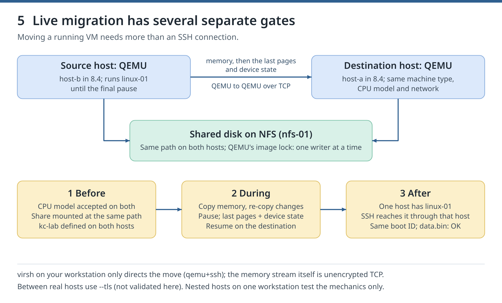

8. Migration and host maintenance
Goal. Move a VM between two KVM hosts while it is stopped, while it runs, and while it runs together with its disk; then empty a host for maintenance. After every move, prove that exactly one host has the VM and that its data is intact.
Two Fedora 44 guests, host-a and host-b, act as the KVM hosts. Like host-b in chapter 6.4, they are nested hosts: VMs that run KVM VMs themselves (chapter 0.2). A third guest, nfs-01, holds their shared storage. All three run on your one workstation, so this lab tests the mechanics only: losing a real physical host is not validated here, and neither are AMD processors (the validation host is Intel). Validated with libvirt 12.0.0 and QEMU 10.2.2 inside the nested hosts.
References: libvirt migration, virsh migrate, CPU models, network XML.

Figure 5. A live migration with a shared disk, as in 8.4: what must be ready before, what moves during, and what you check after.
8.0 Starting point #Day 7 lab
Goal. Start linux-01; 8.2 copies it into the lab.
Commands. If new-guest.sh is missing, repeat chapter 1.7 first:
bash ~/kvm-course/bin/new-guest.sh linux-01Expected output. The last line is linux-01.
Check. The script ends without an error.
If it fails. Read the script's last error. After a half-built guest, run bash ~/kvm-course/bin/remove-guest.sh linux-01 and retry.
Clean up. Keep linux-01.
8.1 Build two hosts and shared storage #Day 7 lab
Goal. Build host-a and host-b, which can both run linux-01, and nfs-01, which stores linux-01's disk for both.
Commands. A migration moves a VM from one host, the source, to another, the destination. The destination must offer the CPU features, the disks and the networks the VM uses. Create the three guests. The hosts get 4 GiB each, nfs-01 the default 2 GiB; with linux-01 that is 12 GiB at most, and linux-01 stops in 8.2:
(
set -euo pipefail
mkdir -m 0700 ~/kvm-course/ch08
MEMORY_MIB=4096 bash ~/kvm-course/bin/new-guest.sh host-a
MEMORY_MIB=4096 bash ~/kvm-course/bin/new-guest.sh host-b
bash ~/kvm-course/bin/new-guest.sh nfs-01
)nfs-01 shares one directory, /srv/kc-shared, with NFS (Network File System: files served over the network). bash -s -- A B runs the lines between the GUEST markers in nfs-01, with the two host addresses A and B as $1 and $2:
- The export line names the two hosts that may mount the share.
no_root_squashlets root on those hosts act as root on the share; libvirt needs that to hand a disk to theqemuuser when a VM starts. Allow it only on a private storage network like this one. - A delegation lets one NFS client cache a file as if it were the only user. On the validation host, once host-a had written to the disk, host-b could not even read its attributes (
Operation not permitted) and could not start the VM.fs.leases-enable = 0turns delegations off, also after a reboot. - Fedora Cloud images run no firewall, so no port needs opening.
(
set -euo pipefail
a=$(cat ~/kvm-course/host-a/ip)
b=$(cat ~/kvm-course/host-b/ip)
ssh -F ~/kvm-course/ssh/config nfs-01 bash -s -- "$a" "$b" <<'GUEST'
set -euo pipefail
sudo dnf install -y nfs-utils
echo 'fs.leases-enable = 0' | sudo tee /etc/sysctl.d/90-kc-nfs.conf
sudo sysctl -p /etc/sysctl.d/90-kc-nfs.conf
sudo install -d -o fedora -g fedora /srv/kc-shared
echo "/srv/kc-shared $1(rw,sync,no_root_squash) $2(rw,sync,no_root_squash)" | sudo tee /etc/exports.d/kc-shared.exports
sudo systemctl enable --now nfs-server
GUEST
)Make host-a and host-b KVM hosts: install QEMU and libvirt as in chapter 6.4 (install_weak_deps=False skips optional packages), plus nfs-utils to mount the share. Each host downloads about 200 MiB.
- Both mount the share at the same path,
/var/lib/libvirt/images/kc-shared, from a line in/etc/fstab, so the mount returns after a reboot (8.5).kc-localis a plain local directory for 8.6. systemctl enable --nowstarts libvirt's sockets now and at every boot.- libvirt's polkit rule gives members of the
libvirtgroup full control of the system instance (the actionorg.libvirt.unix.manage, chapter 6.1). Remote virsh logs in asfedora, sofedorajoins that group. Grant this only in disposable hosts like these, never on your workstation. getseboolshowsvirt_use_nfs, on by default in Fedora: it lets QEMU, confined by sVirt (chapter 6), use files on NFS.
(
set -euo pipefail
n=$(cat ~/kvm-course/nfs-01/ip)
for host in host-a host-b; do
ssh -F ~/kvm-course/ssh/config "$host" bash -s -- "$n" <<'GUEST'
set -euo pipefail
sudo dnf install -y --setopt=install_weak_deps=False qemu-kvm libvirt-daemon-kvm libvirt-client nfs-utils
sudo systemctl enable --now virtqemud.socket virtnetworkd.socket virtstoraged.socket
sudo usermod -aG libvirt fedora
sudo mkdir /var/lib/libvirt/images/kc-shared /var/lib/libvirt/images/kc-local
echo "$1:/srv/kc-shared /var/lib/libvirt/images/kc-shared nfs defaults 0 0" | sudo tee -a /etc/fstab
sudo systemctl daemon-reload
sudo mount /var/lib/libvirt/images/kc-shared
findmnt /var/lib/libvirt/images/kc-shared
getsebool virt_use_nfs
GUEST
done
)Expected output. On the validation host (excerpt; addresses differ on yours):
fs.leases-enable = 0
/srv/kc-shared 192.168.122.105(rw,sync,no_root_squash) 192.168.122.160(rw,sync,no_root_squash)
/var/lib/libvirt/images/kc-shared 192.168.122.20:/srv/kc-shared nfs4 rw,relatime,vers=4.2,…
virt_use_nfs --> onCheck. nfs-01 prints its export line; both hosts show the share in findmnt and virt_use_nfs --> on.
If it fails. mount fails: run sudo exportfs -v in nfs-01 and compare the addresses with cat ~/kvm-course/host-a/ip.
Clean up. Keep everything for 8.2.
8.2 Drive both hosts and start linux-01 #Day 7 lab
Goal. Control both hosts from your workstation, give them the same network, check the CPU model, and start linux-01 from the share on host-a.
Commands. A connection URI can name another host (chapter 2.5); here you use one for the first time:
- With
virsh -c qemu+ssh://host-a/system, virsh logs in to host-a over SSH and talks to the system instance there; the VMs stay on host-a. The URI names no user, because the course SSH settings supplyfedora. - virsh starts
sshitself.command=in the URI makes it start a two-line wrapper instead, which adds those settings. - The two URIs go into
env, which later blocks load with.. This heredoc'sEOFis not quoted, so the shell fills in$HOME. The If it fails hints use$Aand$Btoo: run. ~/kvm-course/ch08/envat your prompt first.
(
set -euo pipefail
cat > ~/kvm-course/bin/course-ssh.sh <<'BASH'
#!/usr/bin/env bash
exec ssh -F ~/kvm-course/ssh/config "$@"
BASH
chmod +x ~/kvm-course/bin/course-ssh.sh
cat > ~/kvm-course/ch08/env <<EOF
A='qemu+ssh://host-a/system?command=$HOME/kvm-course/bin/course-ssh.sh'
B='qemu+ssh://host-b/system?command=$HOME/kvm-course/bin/course-ssh.sh'
EOF
. ~/kvm-course/ch08/env
for uri in "$A" "$B"; do
virsh -c "$uri" hostname
virsh -c "$uri" version
done
)Now write two definitions on your workstation. kc-lab is a private network that both hosts get, identical: the same subnet, router address and router MAC, and the fixed address 192.168.108.10 for linux-01's MAC. Wherever linux-01 runs, it keeps its address and sees the same router. Without a <forward> element the network is isolated: linux-01 reaches only the host it runs on.
linux-01's definition is short, and each part matters for migration:
pc-q35-10.2is a versioned machine type, so the destination builds exactly the same virtual hardware; its QEMU must be 10.2 or newer.<acpi/>gives the guest a power button forvirsh shutdown.Nehalemis a named CPU model, an old Intel model; the check below must accept it on both hosts.match='exact'adds no extra features, andfallback='forbid'makes the start fail rather than use another model. A moved VM must find every CPU feature it started with; chapter 1'shost-passthroughcopies one host's exact CPU, which only identical hosts can offer.- The disk is on the share.
cache='none'makes QEMU bypass the host's page cache, the recommended setting for shared disks. - The seed (chapter 1.2) comes along as a read-only CD-ROM, and the network card keeps linux-01's MAC. The SSH host key and the data travel inside the disk, so the guest is still linux-01.
The unquoted EOF again lets the shell fill in $mac (from domiflist) and $S:
(
set -euo pipefail
mac=$(sudo virsh -c qemu:///system domiflist linux-01 | awk '$2 == "network" {print $5}')
S=/var/lib/libvirt/images/kc-shared
cat > ~/kvm-course/ch08/kc-lab.xml <<EOF
<network>
<name>kc-lab</name>
<bridge name='kc-lab0'/>
<mac address='52:54:00:08:00:01'/>
<ip address='192.168.108.1' netmask='255.255.255.0'>
<dhcp>
<range start='192.168.108.100' end='192.168.108.200'/>
<host mac='$mac' ip='192.168.108.10'/>
</dhcp>
</ip>
</network>
EOF
cat > ~/kvm-course/ch08/linux-01.xml <<EOF
<domain type='kvm'>
<name>linux-01</name>
<memory unit='MiB'>1024</memory>
<vcpu>1</vcpu>
<os><type arch='x86_64' machine='pc-q35-10.2'>hvm</type></os>
<features><acpi/></features>
<cpu mode='custom' match='exact'><model fallback='forbid'>Nehalem</model></cpu>
<devices>
<disk type='file' device='disk'>
<driver name='qemu' type='qcow2' cache='none'/>
<source file='$S/linux-01.qcow2'/>
<target dev='vda' bus='virtio'/>
</disk>
<disk type='file' device='cdrom'>
<source file='$S/linux-01-seed.iso'/>
<target dev='sda' bus='sata'/>
<readonly/>
</disk>
<interface type='network'>
<source network='kc-lab'/>
<mac address='$mac'/>
<model type='virtio'/>
</interface>
</devices>
</domain>
EOF
)Define, start and autostart kc-lab on both hosts. Autostart lets libvirt's network daemon start kc-lab automatically when it first starts after a reboot. hypervisor-cpu-compare --error takes the <cpu> element from linux-01's definition and fails unless the host can provide that CPU:
(
set -euo pipefail
. ~/kvm-course/ch08/env
for uri in "$A" "$B"; do
virsh -c "$uri" net-define ~/kvm-course/ch08/kc-lab.xml
virsh -c "$uri" net-start kc-lab
virsh -c "$uri" net-autostart kc-lab
virsh -c "$uri" hypervisor-cpu-compare --error ~/kvm-course/ch08/linux-01.xml
done
)Give linux-01 data that every move must keep: 64 MiB of random bytes and their SHA-256 checksum. Then stop linux-01 on your workstation; it stays off for the rest of the chapter, so only one linux-01 runs. qemu-img convert flattens its disk chain into one file (chapter 4.3), because the share has no base image. Copy that file and the seed to the share:
(
set -euo pipefail
ssh -F ~/kvm-course/ssh/config linux-01 'set -e
sudo install -d -o fedora -g fedora /srv/kc-data
cd /srv/kc-data
head -c 64M /dev/urandom > data.bin
sha256sum data.bin | tee SHA256SUMS'
bash ~/kvm-course/bin/stop-guest.sh linux-01
sudo qemu-img convert -f qcow2 -O qcow2 /var/lib/libvirt/images/kvm-course/linux-01.qcow2 ~/kvm-course/ch08/linux-01.qcow2
cp ~/kvm-course/linux-01/seed.iso ~/kvm-course/ch08/linux-01-seed.iso
scp -F ~/kvm-course/ssh/config ~/kvm-course/ch08/linux-01.qcow2 ~/kvm-course/ch08/linux-01-seed.iso nfs-01:/srv/kc-shared/
)You will check the same things after every move, so save them as a script:
- Both hosts are asked about linux-01: the target must run it and the other must not even have its definition.
domstate --reasonalso prints libvirt's reason for that state. - linux-01 sits on the target's private network, so SSH reaches it through that host:
-J HOST(jump host) logs in to HOST first, andHostNamereplaces the address in the course'slinux-01entry, whose trusted host key still applies. - The guest prints its boot ID, which changes at every boot: a live move keeps it, a restart does not.
sha256sum -cchecks the data.
cat > ~/kvm-course/bin/check-guest.sh <<'BASH'
#!/usr/bin/env bash
# check-guest.sh HOST: after a move to HOST (host-a or host-b), check linux-01
set -euo pipefail
host=${1:?usage: check-guest.sh host-a|host-b}
. ~/kvm-course/ch08/env
if [ "$host" = host-a ]; then here=$A; there=$B; else here=$B; there=$A; fi
virsh -c "$here" domstate linux-01 --reason
others=$(virsh -c "$there" list --all --name)
if grep -x linux-01 <<< "$others"; then echo 'STOP: the other host also has linux-01' >&2; exit 1; fi
guest() { ssh -F ~/kvm-course/ssh/config -J "$host" -o HostName=192.168.108.10 linux-01 "$@"; }
for i in $(seq 60); do guest true 2>/dev/null && break; sleep 3; done
guest 'echo "boot ID: $(cat /proc/sys/kernel/random/boot_id)"; cd /srv/kc-data && sha256sum -c SHA256SUMS'
BASHDefine linux-01 on host-a only (a migration carries the definition to the other host), start it and check it:
(
set -euo pipefail
. ~/kvm-course/ch08/env
virsh -c "$A" define ~/kvm-course/ch08/linux-01.xml
virsh -c "$A" start linux-01
bash ~/kvm-course/bin/check-guest.sh host-a
)Expected output. On the validation host (excerpt; paths, checksums and IDs differ on yours):
host-a
Running hypervisor: QEMU 10.2.2
The CPU provided by hypervisor on the host is a superset of CPU described in /home/daniel/kvm-course/ch08/linux-01.xml
4ba99842e4808a47c838442a3a083be9c9d3885a9c0aeecb1d860b8c29158e8f data.bin
running (booted)
boot ID: 8e42a368-dcf3-4ee3-b146-ba18d8ff9e78
data.bin: OKCheck. Both hosts accept the CPU model, and linux-01 runs on host-a only with data.bin: OK.
If it fails. hypervisor-cpu-compare says incompatible: check nested virtualization (chapter 0.2). linux-01 does not start with Permission denied: run ls -ln /var/lib/libvirt/images/kc-shared in the host. SSH never answers: virsh -c "$A" net-dhcp-leases kc-lab shows whether linux-01 got its address.
Clean up. Keep everything for 8.3.
8.3 Move a stopped VM #Day 7 lab
Goal. Move the stopped linux-01 from host-a to host-b, and see that the shared disk still has only one user.
Commands. An offline migration (--offline) copies only a VM's definition, never its memory or disks, and does not stop the VM: shut it down first. With shared storage that is all a move needs, because host-b opens the same disk file. --persistent defines linux-01 on host-b and --undefinesource removes its definition from host-a, so only one host can start it. virsh await … --condition domain-inactive waits until the shutdown has finished:
(
set -euo pipefail
. ~/kvm-course/ch08/env
virsh -c "$A" shutdown linux-01
virsh -c "$A" await linux-01 --condition domain-inactive --timeout 120
virsh -c "$A" migrate --offline --persistent --undefinesource linux-01 "$B"
virsh -c "$B" start linux-01
bash ~/kvm-course/bin/check-guest.sh host-b
)host-a still sees the same file on the share. QEMU locks the disk images it opens, and in this lab the lock works across NFS. qemu-img info opens the image as QEMU does, so on host-a it must be refused; grep proves the lock was the reason. Never test this with virsh start on host-a: libvirt hands the disk to the qemu user before QEMU tries the lock, and after the failed start gives it back to root, cutting off the running linux-01's writes:
(
set -euo pipefail
if ssh -F ~/kvm-course/ssh/config host-a sudo qemu-img info /var/lib/libvirt/images/kc-shared/linux-01.qcow2 2> ~/kvm-course/ch08/lock.txt; then
echo 'UNEXPECTED: host-a opened the disk in use'; false
fi
grep -F 'Failed to get shared "write" lock' ~/kvm-course/ch08/lock.txt
)Expected output. On the validation host (excerpt; IDs and times differ on yours):
running (booted)
boot ID: c5d107c2-5e32-4dc9-9e0b-0155f2789c5e
data.bin: OK
qemu-img: Could not open '/var/lib/libvirt/images/kc-shared/linux-01.qcow2': Failed to get shared "write" lockCheck. linux-01 runs on host-b with a new boot ID (it restarted) and data.bin: OK, and host-a's qemu-img info was refused with Failed to get shared "write" lock.
If it fails. await times out: the guest ignored the shutdown request; look at virsh -c "$A" domstate linux-01 --reason before doing anything else. qemu-img info printed the image details: the lock did not reach nfs-01; findmnt /var/lib/libvirt/images/kc-shared on both hosts must show local_lock=none. Another error: lock.txt names it; the test proved nothing yet.
Clean up. linux-01 runs on host-b; host-a has no definition of it.
8.4 Move a running VM #Day 7 lab
Goal. Move the running linux-01 from host-b back to host-a without restarting it, and measure how long it was paused.
Commands. A live migration (--live) copies the guest's memory to the destination while the guest keeps running, then copies again the pages the guest changed meanwhile, round after round. When the pages left can be sent within the allowed pause (300 ms by default), it pauses the guest for those pages and the device state, and resumes it on the destination. This method is called pre-copy. A guest that changes memory faster than the network can carry may not reach that point; virsh -c "$B" domjobabort linux-01, sent to the source from a second terminal, cancels the move, and the guest keeps running there (not validated here: idle linux-01 always converges). The disk is not copied: both hosts open the same file. The destination's QEMU opens it without the write lock; at the pause the source flushes its writes and lets go, and the destination takes the lock before the guest resumes: one writer at a time.
The memory goes straight from host-b's QEMU to host-a's QEMU over TCP; --migrateuri tcp://ADDRESS says where to send it (otherwise libvirt uses host-a's host name, which host-b may not resolve); your workstation's virsh only directs the move. That stream is not encrypted. Here it stays on your workstation's private NAT network; between real hosts use --tls, which needs certificates on both hosts (not validated here).
Watch with virsh event (chapter 2.4) on both hosts during the move. domjobinfo --completed then shows the statistics of the finished migration job:
(
set -euo pipefail
. ~/kvm-course/ch08/env
virsh -c "$A" event --event lifecycle --loop --timestamp --timeout 40 > ~/kvm-course/ch08/events-a.txt &
virsh -c "$B" event --event lifecycle --loop --timestamp --timeout 40 > ~/kvm-course/ch08/events-b.txt &
sleep 3
virsh -c "$B" migrate --live --persistent --undefinesource --verbose linux-01 "$A" --migrateuri "tcp://$(cat ~/kvm-course/host-a/ip)"
wait
cat ~/kvm-course/ch08/events-b.txt ~/kvm-course/ch08/events-a.txt
virsh -c "$A" domjobinfo linux-01 --completed
bash ~/kvm-course/bin/check-guest.sh host-a
)Expected output. On the validation host (excerpt; times, sizes and IDs differ on yours). In time order: host-a starts a QEMU to receive the guest (Started Migrated), host-b pauses the guest for the last pages (Suspended Migrated), host-a resumes it (Resumed Migrated), and host-b's QEMU ends. Memory processed is smaller than Memory total because pages full of zeros (Constant pages) travel as a short marker; Iteration counts the pre-copy passes:
Migration: [100.00 %]
2026-10-02 07:41:50.826+0000: event 'lifecycle' for domain 'linux-01': Suspended Migrated
2026-10-02 07:41:51.120+0000: event 'lifecycle' for domain 'linux-01': Shutdown Finished after host request
2026-10-02 07:41:51.156+0000: event 'lifecycle' for domain 'linux-01': Stopped Migrated
2026-10-02 07:41:50.716+0000: event 'lifecycle' for domain 'linux-01': Started Migrated
2026-10-02 07:41:50.910+0000: event 'lifecycle' for domain 'linux-01': Defined Added
2026-10-02 07:41:50.913+0000: event 'lifecycle' for domain 'linux-01': Resumed Migrated
Operation: Incoming migration
Time elapsed: 301 ms
Memory processed: 480.108 MiB
Memory total: 1.001 GiB
Iteration: 3
Constant pages: 140087
Total downtime: 89 ms
running (migrated)
boot ID: c5d107c2-5e32-4dc9-9e0b-0155f2789c5e
data.bin: OKCheck. host-b's events end with Stopped Migrated, host-a's with Resumed Migrated; domstate says running (migrated); the boot ID is the one from 8.3; Total downtime is the pause.
If it fails. Migration without shared storage is unsafe: the disk is not on an NFS mount on the source (findmnt /var/lib/libvirt/images/kc-shared there). Connection refused or a timeout: check the address after tcp://. Never add --unsafe.
Clean up. linux-01 runs on host-a.
8.5 Drain a host for maintenance #Day 7 lab
Goal. Empty host-a, reboot it as the maintenance step, check its storage and network, and move linux-01 back.
Commands. Draining a host means moving every VM off it before maintenance such as installing updates and rebooting. Here the maintenance is a reboot of the nested host-a; never reboot your workstation. Migrate each running VM to host-b; an empty list --all then means host-a is drained:
(
set -euo pipefail
. ~/kvm-course/ch08/env
for vm in $(virsh -c "$A" list --name); do
virsh -c "$A" migrate --live --persistent --undefinesource "$vm" "$B" --migrateuri "tcp://$(cat ~/kvm-course/host-b/ip)"
done
left=$(virsh -c "$A" list --all --name)
test -z "$left"
bash ~/kvm-course/bin/check-guest.sh host-b
)Reboot host-a. SSH may report a closed connection. sleep 10 gives host-a time to go down; then the loop tries SSH every 3 seconds, as check-guest.sh does. The changed boot ID proves the reboot:
(
set -euo pipefail
before=$(ssh -F ~/kvm-course/ssh/config host-a cat /proc/sys/kernel/random/boot_id)
ssh -F ~/kvm-course/ssh/config host-a sudo systemctl reboot || true
sleep 10
for i in $(seq 100); do ssh -F ~/kvm-course/ssh/config host-a true 2>/dev/null && break; sleep 3; done
after=$(ssh -F ~/kvm-course/ssh/config host-a cat /proc/sys/kernel/random/boot_id)
echo "host-a boot ID before: $before, after: $after"
test "$before" != "$after"
)After the reboot, check the mount from /etc/fstab and kc-lab before moving linux-01 back. net-info can start libvirt's network daemon through its socket; the daemon then starts kc-lab because you enabled autostart:
(
set -euo pipefail
. ~/kvm-course/ch08/env
ssh -F ~/kvm-course/ssh/config host-a findmnt /var/lib/libvirt/images/kc-shared
virsh -c "$A" net-info kc-lab
virsh -c "$B" migrate --live --persistent --undefinesource linux-01 "$A" --migrateuri "tcp://$(cat ~/kvm-course/host-a/ip)"
bash ~/kvm-course/bin/check-guest.sh host-a
)Expected output. On the validation host (excerpt; IDs and addresses differ on yours):
running (migrated)
host-a boot ID before: 06a3ddba-1bdc-4bbb-8324-0b7ca4be485e, after: 77ba70f1-9a38-472e-8ef3-f9ee7152e1db
/var/lib/libvirt/images/kc-shared 192.168.122.20:/srv/kc-shared nfs4 rw,relatime,vers=4.2,…
Active: yes
Autostart: yes
running (migrated)
boot ID: c5d107c2-5e32-4dc9-9e0b-0155f2789c5e
data.bin: OKCheck. host-a was empty before its reboot, its boot ID changed, the share is mounted, kc-lab is active with autostart enabled, and linux-01 runs on host-a again with the same boot ID as in 8.4 and data.bin: OK.
If it fails. host-a does not come back: read its console with sudo virsh -c qemu:///system console host-a (leave with Ctrl+]). The share is missing: check the /etc/fstab line in host-a. kc-lab is inactive: virsh -c "$A" net-autostart kc-lab was skipped. The drain stops at test -z: virsh -c "$A" list --all names a VM that was not running; move it as in 8.3.
Clean up. linux-01 runs on host-a.
8.6 Move a running VM with its disk #Day 7 lab
Goal. Move the running linux-01 to a host that cannot see its disk, copying the disk during the migration.
Commands. Hosts without shared storage can still live-migrate: --copy-storage-all copies every writable disk to the destination while the guest runs, then moves the memory; the read-only seed stays on the share, which host-b also sees. First give linux-01 a disk that only host-a has: shut it down, copy the disk into host-a's local directory, and point the definition at the copy with sed. Once it runs from the copy, the file on the share is stale; delete it:
(
set -euo pipefail
. ~/kvm-course/ch08/env
virsh -c "$A" shutdown linux-01
virsh -c "$A" await linux-01 --condition domain-inactive --timeout 120
ssh -F ~/kvm-course/ssh/config host-a sudo cp /var/lib/libvirt/images/kc-shared/linux-01.qcow2 /var/lib/libvirt/images/kc-local/
virsh -c "$A" dumpxml linux-01 --inactive | sed 's#kc-shared/linux-01.qcow2#kc-local/linux-01.qcow2#' > ~/kvm-course/ch08/local.xml
grep -F kc-local/linux-01.qcow2 ~/kvm-course/ch08/local.xml
virsh -c "$A" define ~/kvm-course/ch08/local.xml
virsh -c "$A" start linux-01
bash ~/kvm-course/bin/check-guest.sh host-a
ssh -F ~/kvm-course/ssh/config host-a sudo rm /var/lib/libvirt/images/kc-shared/linux-01.qcow2
)The destination needs an empty disk image at the same path with the same virtual size. domblkinfo prints the size (Capacity, in bytes); LC_ALL=C keeps that label in English for awk:
(
set -euo pipefail
. ~/kvm-course/ch08/env
size=$(LC_ALL=C virsh -c "$A" domblkinfo linux-01 vda | awk '/^Capacity:/ {print $2}')
echo "Capacity: $size bytes"
ssh -F ~/kvm-course/ssh/config host-b sudo qemu-img create -f qcow2 /var/lib/libvirt/images/kc-local/linux-01.qcow2 "$size"
)Migrate in the background and look at the job while it runs: domjobinfo shows the disk copy (File processed); the memory follows once the disk is copied. --bandwidth 50 caps the move at 50 MiB/s: time to look, and on a shared network, room for other traffic. The disk travels over its own unencrypted TCP connection, like the memory. Afterwards host-a still holds the old disk; delete that stale copy:
(
set -euo pipefail
. ~/kvm-course/ch08/env
virsh -c "$A" migrate --live --copy-storage-all --bandwidth 50 --persistent --undefinesource linux-01 "$B" --migrateuri "tcp://$(cat ~/kvm-course/host-b/ip)" &
migration=$!
sleep 5
virsh -c "$A" domjobinfo linux-01
wait "$migration"
virsh -c "$B" domjobinfo linux-01 --completed
bash ~/kvm-course/bin/check-guest.sh host-b
ssh -F ~/kvm-course/ssh/config host-a sudo rm /var/lib/libvirt/images/kc-local/linux-01.qcow2
)Expected output. On the validation host (excerpt; sizes, times and IDs differ on yours). The copy covered the 835 MiB of data the image holds, not its 20 GiB virtual size; the destination's statistics count only the memory. At 50 MiB/s the move took about 27 seconds, but the guest paused for 65 ms:
Job type: Unbounded
Operation: Outgoing migration
Time elapsed: 4848 ms
File processed: 241.938 MiB
File remaining: 593.500 MiB
File total: 835.438 MiB
Job type: Completed
Operation: Incoming migration
Time elapsed: 26826 ms
Memory processed: 503.818 MiB
Memory bandwidth: 51.133 MiB/s
Total downtime: 65 ms
running (migrated)
boot ID: b9ce8fe4-d6df-4aeb-b51e-887c37af3832
data.bin: OKCheck. The running job showed disk progress; linux-01 runs on host-b with the boot ID it had after the restart in this section and data.bin: OK; no disk of linux-01 is left on host-a.
If it fails. no storage pool with matching target path or a size error on host-b: the empty image is missing, at another path, or of another size. Migration without shared storage is unsafe: --copy-storage-all is missing.
Clean up. linux-01 runs on host-b from host-b's local disk.
Clean up #Day 7 lab
linux-01 on your workstation is still shut off with its data; chapter 9 starts it again. Removing the three lab guests also removes everything inside them: the moved linux-01, the share and kc-lab. Then delete the chapter folder and this chapter's two scripts:
(
set -euo pipefail
bash ~/kvm-course/bin/remove-guest.sh host-a
bash ~/kvm-course/bin/remove-guest.sh host-b
bash ~/kvm-course/bin/remove-guest.sh nfs-01
rm -rf ~/kvm-course/ch08
rm -f ~/kvm-course/bin/course-ssh.sh ~/kvm-course/bin/check-guest.sh
)To remove the whole course instead, use Appendix B.